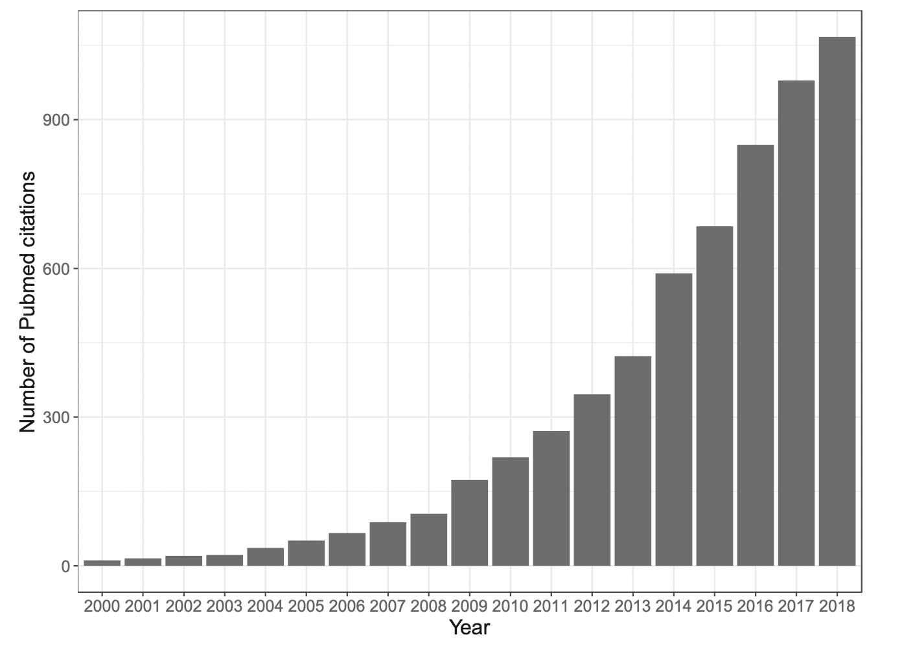
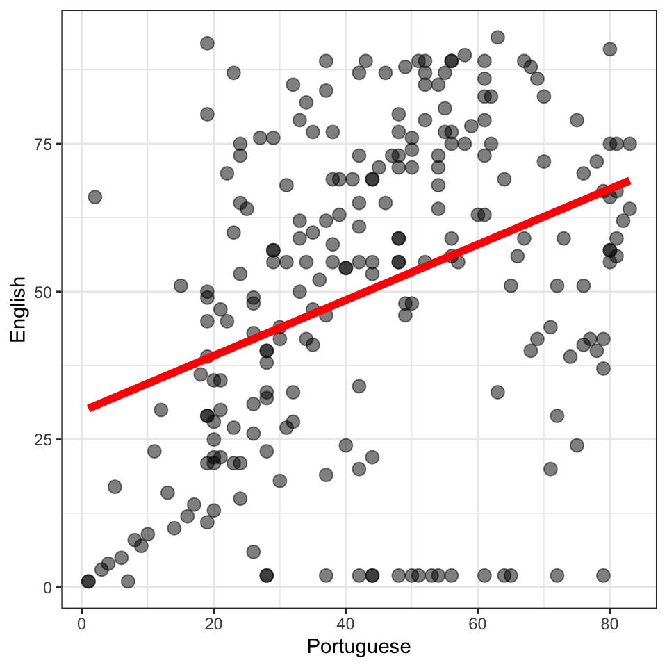
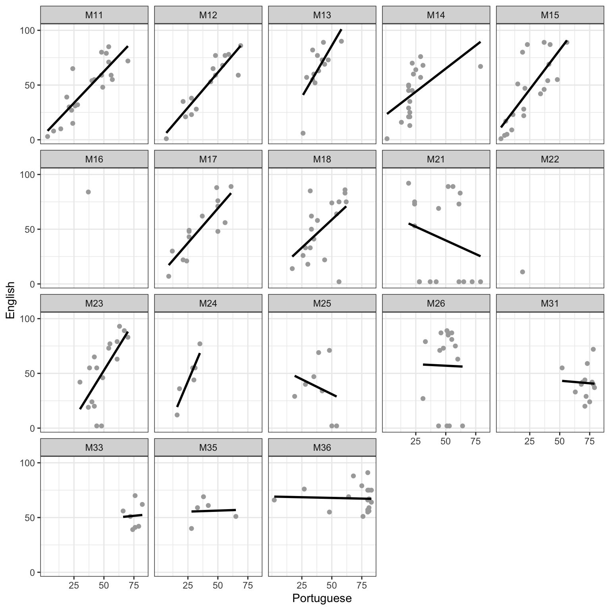

3 Introduction to multilevel data
3.1 Motivations
In this chapter, we shall start to develop skills in using a method or approach that is essential in modern data analysis: multilevel modeling. We are going to invest four weeks in working on this approach. This investment is designed to give you a specific, important, advantage in your work as a psychologist, or as someone who produces or consumes psychological research.
Multilevel models: why do we need to do this? - Four weeks is a lot of time to spend on one method.
It is now clear that someone who works in psychological research has to know about multilevel or hierarchically structured data, and has to know how to apply multilevel models (or mixed-effects models). Growth in the popularity of these kinds of analysis has been very very rapid, as can be seen in Figure 3.1. It is now, effectively, the standard or default method for professional data analysis in most areas of psychological and other social or clinical sciences (or it soon will be). There are good reasons for this (Baayen et al., 2008).

We continue to teach ANOVA and multiple regression (linear models) in our courses because the research literature is full of the results of analyses done using these methods and because many psychologists continue to use these methods in their research. However, there is increasingly wide-spread recognition that these classical methods have serious problems when applied to data with hierarchical structure. Because most psychological data (not all) will have hierarchical structure, this makes learning about multilevel or mixed-effects methods a key learning objective.
But, because it is relatively new, many professional psychologists struggle to understand why or how to use these methods effectively. This means that students who acquire the skill graduate with a clear employability advantage. It also means that we have to take seriously the challenge of learning about these methods. This is why we will spend a bit of time on them. In my experience, in over a decade of teaching multilevel models, in working with both students and professionals, we shall need to develop understanding and skills gradually. We will work patiently, so that we can secure understanding by building our learning through a series of practical examples, increasing the scope of our practical skills, and developing the sophistication of our understanding, step-by-step, as we go.
3.1.1 A word about names
Multilevel models are also known as hierarchical models or linear mixed-effects models or random effects models. People use these terms interchangeably. They also use the abbreviations LMMs or LMEs. Sorry about that: humans make methods, and the names we use for things do vary.
I will only use the terms multilevel or linear mixed-effects models.
- In this chapter, we emphasize the multilevel perspective but, to anticipate future development, we will come to think in terms of mixed-effects models.
3.2 Challenges
The key challenges for learning should be explained at the start so that we know what we shall have to do to overcome them.
- Even though most psychological data has some sort of multilevel or hierarchical structure, we are not used to recognizing it. This is because the structure has often been hidden or ignored in the education and practice of traditional research methods in Psychology.
In time, you will come to see multilevel structure everywhere (Kreft & Leeuw, 1998). But first you will need to get some practice so that you can become familiar with the idea and learn to recognize what it looks like when data have a multilevel or hierarchical structure. This is why we will examine multilevel structured data across a range of different kinds of experiments or surveys, over a series of weeks.
We will learn to identify and understand hierarchical structure in psychological data by just looking at datasets, by producing visualizations, by doing analyses, and by trying to explain to ourselves and each other what we think we see.
- The ideas that support an understanding of why and how we use multilevel models can be intimidating when we first encounter them. The mathematics behind how the models work is both profound and sophisticated. But the good news is that we can practice the application of the analysis method while talking and thinking about the critical ideas using just words or plots.
We cannot or should not avoid engaging with the ideas – because we have to be able to explain what we are doing – but there are many routes to an effective understanding. For those who want to develop a more mathematically-based perspective, I will provide references to important texts in the literature on multilevel models (see Section 3.12.1).
3.3 The key idea to get us started
Multilevel models are a general form of linear model.
Another way of saying this is: linear models are a special form of multilevel models.
This is because linear models assume that observations are independent. We often cannot make this assumption, as we shall see. More generally, then, we do not assume that observations are independent and so we use multilevel models.
3.4 The approach we take
We are not going to take a mathematical approach to learning about multilevel models. We do not have to. The approach we are going to take is:
- verbal – We will talk about the main ideas in words. Sometimes, we will present formulas but that is just to save having to use too many words.
- visual – We will show ourselves and each other what multilevel structure in data looks like, and what that structure means for our analyses of behaviour.
- practical – We will use R to complete analyses, so we will learn about coding models in practice. Fortunately, through coding we can get a clear idea of what we want the models to do.
3.5 Targets
Our learning objectives include the development of key concepts and skills.
- concepts – how data can have multilevel structures and what this requires in models
- skills – where skills comprise the capacity to
- use visualization to examine observations within groups
- run linear models over all data and within each class
- use the
lmer()function to fit models of multilevel data
We are just getting started. Our plan will be to build depth and breadth in understanding as we progress over the next few weeks.
3.6 Study guide
- Read in the example data
BAFACALO_DATASET.RDataand identify how the data are structured at multiple levels. - Use visualizations to explore the impact of the structure.
- Run analyses using linear models (revision) and linear mixed-effects models (extension) code.
- Review readings provided.
3.7 The data we will work with: Brazilian school children
This week, we will be working with data taken from a study on education outcomes in Brazilian children, reported by Golino & Gomes (2014). First, we will progress through the steps required to download and prepare the files for analysis in R.
The BAFACALO_DATASET.RData data were collected and shared online by Golino & Gomes (2014). Information about the background motivating the study, the methods of data collection, along with the dataset itself, can be found here.
Golino & Gomes (2014) collected school end-of-year subject grades for a sample of 292 children recruited from multiple classes in a school in Brazil. Here, each subject is a theme or course that children studied in school, e.g., Physics or English language, and for which each child was awarded a grade at the end of the school year. So, we have information on different children, and information about their subject grades. Children were taught in different classes but the classes appear to be units of the school organization (the information is not quite clear) not subject or course groupings. Thus, we also have information on which classes children were in when data about them were collected.
The data were compiled to an .RData format file.
.RData is R’s own file format so the code you use to load and access the data for analysis is a bit simpler than you are used to. (You will have used read.csv() or read_csv() previously.)
In my own practice, I prefer to keep files in formats like .csv which can be opened and read in other software applications (like Excel), so using an .RData is an exception in these materials.
3.7.1 Locate and download the data file
You can access the data from the link associated with the Golino & Gomes (2014) article here.
Or you can download the data-01-multilevel.zip files folder for this chapter.
The file is located in a .zip folder called data-01-multilevel. The data file is collected together with the .R scripts:
01-multilevel-workbook.Rthe workbook you will need to do the practical exercises.01-multilevel-workbook-answers.Rwith answers to questions and code for exercises.
3.7.2 Read in the data file using the load() function
You can read the BAFACALO_DATASET.RData file into the R workspace or environment using the following code.
load("BAFACALO_DATASET.RData")3.7.3 Inspect the data
The dataset consists of rows and columns. Take a look. If you have successfully loaded the dataset into the R environment, then you should be able to view it.
You could look at the dataset by using the View() function.
View(BAFACALO_DATASET)Or you can use the head() function to see the top few rows of the dataset.
head(BAFACALO_DATASET)You can check for yourself that each row holds data about a child, including their participant identity code, as well as information about their parents, household, gender, age, school class, and their grades on end-of-year subject attainment (e.g., how well they did in English language).
There are many more variables in the dataset than we need for our exercises, and a summary would fill pages. You can see for yourself if you inspect the dataset using
summary(BAFACALO_DATASET)3.8 Tidy the data
When you inspect the file, you will see that it includes a large number of variables, but we only really care about those we will use in our exercises:
participant_idgives the participant identity code for each child;class_numbergives the class identity code for the school class for each child;- and values in
portuguese,english,math, andphysicscolumns give the score for each child in subject class attainment measures.
You can see that I am not explaining the variables in great depth. For our aims, we do not need more detailed information but please do read the data article if you wish to find out more.
We need to tidy the data before we can get to the analysis parts of this chapter. We are going to:
- Select the variables we want to work with;
- Filter out missing values, if any are present;
- And make sure R knows how we want each variable to be identified; what type the variable should have.
We shall need the tidyverse library of functions.
library(tidyverse)3.8.1 Select the variables
We can start by selecting the variables we want, which include those named here, ignoring all the rest. We take the BAFACALO_DATASET. We then use the select() function to select the variables we want.
brazil <- BAFACALO_DATASET %>%
select(
class_number, participant_id,
portuguese, english, math, physics
)Notice the code is written to create the new selected dataset and, at the same time, gave it a more usable (shorter) name, with brazil <- BAFACALO_DATASET ...
Inspect the data to see what you have.
summary(brazil) class_number participant_id portuguese english math
M11 : 21 Min. : 1.00 60 : 10 100 : 17 60 : 13
M15 : 20 1st Qu.: 73.75 76 : 9 79 : 11 69 : 9
M14 : 19 Median :146.50 65 : 8 96 : 8 70 : 9
M36 : 19 Mean :146.50 73 : 8 81 : 7 62 : 8
M18 : 18 3rd Qu.:219.25 74 : 7 89 : 7 71 : 7
(Other):133 Max. :292.00 (Other):188 (Other):180 (Other):184
NA's : 62 NA's : 62 NA's : 62 NA's : 62
physics
60 : 16
60.1 : 5
0 : 4
61.8 : 4
66 : 4
(Other):197
NA's : 62 3.8.2 Remove missing values
If you look at the results of the selection, you can see that there are missing values, written as e.g. NA's 62 at the bottom of each summary of each variable (if a variable column includes missing values).
Remember that in R NA means “not available” i.e. missing.
We will need to get rid of the missing values. It is simpler to do this at the start rather than wait for an error message, later, when some arithmetic function tells us it cannot give us a result because there are NAs present.
We can get rid of the missing values using na.omit()
brazil <- na.omit(brazil)If you then look at a summary of the data again then you will see that the NAs are gone.
summary(brazil) class_number participant_id portuguese english math
M11 : 21 Min. : 3.0 60 : 10 100 : 17 60 : 13
M15 : 20 1st Qu.: 77.5 76 : 9 79 : 11 69 : 9
M14 : 19 Median :144.5 65 : 8 96 : 8 70 : 9
M36 : 19 Mean :146.6 73 : 8 81 : 7 62 : 8
M18 : 18 3rd Qu.:222.8 74 : 7 89 : 7 71 : 7
M21 : 17 Max. :291.0 82 : 7 86 : 6 66 : 6
(Other):116 (Other):181 (Other):174 (Other):178
physics
60 : 16
60.1 : 5
0 : 4
61.8 : 4
66 : 4
74.2 : 4
(Other):193 3.8.3 Getting R to treat a variable as an object of the type required using the as...() family of functions
But if you look closely at the output from summary(brazil) you will see that the portuguese and english variables are summarized in the way that R summarizes factors.
When you ask R to summarize factors, R gives you a count of the number of observations associated with each factor level, that is, each category in each variable. Here, it is treating a grade score like \(100\) in english as a category (like you might treat \(dog\) as a category of pets), and you can see that the count shows you that 17 children were recorded as having scored 100 in their class. We do not want numeric variables like subject grades (e.g. children’s grades in English) treated as categorical variables, factors.
You can also see that R gives you a numeric summary of the recorded values in the participant_id variable. This makes no sense because the identity code numbers are (presumably) assigned at random so identity numbers provide no useful numeric information for us. We do not want this either.
We want R to treat the educational attainment scores as numbers. We can do this using the as.numeric() function. We want R to treat the class and participant identity numbers as factors (categorical variables). We can do this using the as.factor() function.
We could do this one variable at a time.
brazil$portuguese <- as.numeric(brazil$portuguese)
brazil$english <- as.numeric(brazil$english)
brazil$math <- as.numeric(brazil$math)
brazil$physics <- as.numeric(brazil$physics)
brazil$class_number <- as.factor(brazil$class_number)
brazil$participant_id <- as.factor(brazil$participant_id)But it is simpler and more efficient in tidyverse style. (You can see a discussion here that helped me to figure this out.)
brazil <- brazil %>%
mutate(across(c(portuguese, english, math, physics), as.integer),
across(c(class_number, participant_id), as.factor)) If you now look at the summary of the data, you can see that R will give you mean etc. for the subject class score variables e.g. english, showing that it is now treating them as numeric variables. In comparison, R gives you counts of the numbers of observations for each level (category) of categorical or nominal variables like participant_id.
summary(brazil) class_number participant_id portuguese english math
M11 : 21 3 : 1 Min. : 1.00 Min. : 1.00 Min. : 1.00
M15 : 20 4 : 1 1st Qu.:26.25 1st Qu.:29.00 1st Qu.: 39.00
M14 : 19 5 : 1 Median :42.00 Median :55.00 Median : 58.00
M36 : 19 6 : 1 Mean :43.55 Mean :50.25 Mean : 58.17
M18 : 18 7 : 1 3rd Qu.:58.75 3rd Qu.:73.00 3rd Qu.: 79.75
M21 : 17 9 : 1 Max. :83.00 Max. :93.00 Max. :104.00
(Other):116 (Other):224
physics
Min. : 1.00
1st Qu.: 34.00
Median : 71.50
Mean : 71.57
3rd Qu.:107.75
Max. :148.00
3.8.3.1 Coercion: a quick lesson
R treats things like variables as vectors. A vector can be understood to be a set or list of elements: things like numbers of words.
R gives each vector a type (factor, numeric etc.) which helps to inform different functions how to handle that vector. Usually, R assigns type correctly but sometimes it does not. We can use what is called coercion to force R to assign the correct type to a variable.
It is more efficient to do this at the start of an analysis workflow.
Normally, I would use read_csv() from tidyverse and assign type to variable using col_types() specification. (See here for more information and an example.) But it is useful to learn what you need to do if you need to change the way a variable is treated after you have got the data into the R environment.
3.8.3.2 Exercise – experiment with coercion
In R, there are a family of functions that work together. You can test whether a variable (a vector, technically) is or is not a certain type using the is.[something] function. For example:
is.factor(brazil$english)
is.numeric(brazil$english)
is.character(brazil$english)And you can coerce variables so that they are treated as having certain types.
brazil$english <- as.factor(brazil$english)
brazil$english <- as.numeric(brazil$english)
brazil$english <- as.character(brazil$english)Now try it out.
- Test out type for different variables using
is...()for some of the variables. - Test out coercion – and its results – using
as...()for some of the variables. - Look at the results using
summary().
3.9 Introduction to thinking about multilevel models
3.9.1 Main ideas – Phenomena and data sets in the social sciences often have a multilevel structure
We (Psychologists) often adopt Repeated Measures or Clustered designs in our studies, and these designs yield data that have a multilevel structure. Examples of research which results in data with a multilevel structure include:
- Studies where we test the same people multiple times, maybe in developmental or longitudinal investigations;
- Intervention, learning or treatment studies where we need to make pre- and post-treatment comparisons;
- Studies where we present multiple stimuli and everyone sees the same stimuli;
- Studies that involve multi-stage sampling e.g. selecting a sample of classes or schools then testing a sample of children within each classes or within each school.
The key insight to keep in mind when considering the analysis of such data is that observations are clustered and are not independent: they are correlated. What is correlated with what?
Imagine testing a number of subjects by giving them all the same test. In that test, you might present them all with the same stimuli over a series of trials, so that everybody sees the same set of stimuli. Do you think an observed response recorded for any one individual will be uncorrelated i.e. independent of that person’s other responses?
People are different and one usually finds that a slow or inaccurate subject is slow or inaccurate for most of their responses. That means that if you have information about one of their responses you can predict, in part, what the time or accuracy of one of their other responses would be. That capacity to predict one response from another is what we mean when we talk about a lack of independence.
Alternatively, imagine going to test children in a school. Will the children in one class be more like each other than they are like children in other classes? In other words, is there an effect of class – maybe due to the approach of the teacher, the effect of the class environment etc. – so that outcomes for children in a class are correlated with each other?
We are talking, here, about a really quite general property of data collected in certain, very widely used, designs in Psychology: the clustering or hierarchical ordering of data.
This week, we will see that we must deal with the dependence of observations within a class, where the observed responses were made about the different pupils tested in a class, for a number of different classes.
3.9.2 Multilevel models – why they are more used and more useful than traditional methods
The utility of multilevel models to analyze multilevel data or hierarchically structured data is well established in education. In educational research, we often need to think about effects of interventions or correlations in the context of observing children in classes, schools or districts, perhaps over time or at different time points. This means that many of the critical textbooks present examples that are based on educational research data (Bryk & Raudenbush, 1992; Goldstein, 2011; Kreft & de Leeuw, 1998; Snijders & Bosker, 2012).
Multilevel models are growing in popularity in Psychology as well as in Education because they can be used to account for systematic and random sources of variance in observed outcomes when data are hierarchically structured. A hierarchical structure is present in data when a researcher: tests participants who belong to different groups like classes, clinics or schools; presents a sample of stimuli to each member of a sample of participants; or makes repeated observations for each participant over a series of test occasions.
In these circumstances, the application of traditional analytic methods has typically required the researcher to aggregate their data (e.g., averaging the responses made by a participant to different stimuli) or to ignore the hierarchical structure in their data, (e.g., analyzing the responses made by some pupils while ignoring the fact that the pupils were tested in different classes). But the application of traditional analysis approaches (e.g., regression, ANOVA) to multilevel structured data extracts scientific costs (Baayen et al., 2008; Barr, Levy, Scheepers, & Tily, 2013).
Ignoring structure by ignoring or averaging over sources of variability like differences between classes, participants, or stimulus items can mean that analyses are less sensitive because they fail to fully account for error variance. Where differences between classes, participants or stimuli include variation in the impact of experimental variables, e.g., individual differences in response to an experimental manipulation, the application of traditional methods can be associated with an increased risk of false positives in discovery. Yet these costs need no longer be suffered because the capacity to perform multilevel modeling is now readily accessible.
3.9.3 Practical applications: children sampled within classes
If a researcher tests participants belonging to different groups, e.g., records the educational attainment of different children recruited from different classes in a school, the test scores for the participants are observations that occupy the lowest level of a hierarchy (see Figure 3.2). In multilevel modeling, those observations are understood to be nested within higher-level sampling units, here, the classes. We can say that the children are sampled from the population of children. And the classes are sampled from the population of classes. Critically, we recognize that the children’s test scores are nested within the classes. This multi-stage sampling has important consequences, as we shall see.
We are going to be working with the school data collected by Golino & Gomes (2014) in Brazil, so let’s take another look at that dataset. Figure ?fig-golino2014 presents the first 25 rows of the selected-variables brazil dataset. (I have arranged the rows by class number ID.) You can see that there are multiple rows of data for each class_number, one row for each child, with multiple children (you can see different participant_id numbers). This presentation of the dataset illustrates in practical terms – what you can actually see when you look at your data – what multilevel structured data can look like.
brazil %>%
arrange(desc(class_number)) %>%
head(n = 25) class_number participant_id portuguese english math physics
1 M36 11 80 55 60 81
2 M36 30 48 55 43 57
3 M36 93 83 75 55 80
4 M36 95 80 66 55 66
5 M36 111 80 57 99 129
6 M36 117 27 76 83 89
7 M36 153 2 66 89 141
8 M36 163 68 88 74 137
9 M36 176 80 75 60 127
10 M36 216 75 79 64 124
11 M36 223 81 56 58 78
12 M36 234 81 75 49 74
13 M36 242 81 67 45 77
14 M36 254 76 51 33 103
15 M36 260 81 59 39 82
16 M36 271 64 69 82 138
17 M36 278 80 57 56 107
18 M36 280 83 64 56 84
19 M36 286 80 91 64 98
20 M35 20 42 61 97 92
21 M35 118 33 59 33 80
22 M35 140 28 40 33 58
23 M35 179 38 69 56 145
24 M35 247 65 51 64 97
25 M33 15 76 70 73 853.9.4 To understand the application of multilevel models: first, we ignore the multilevel structure in the data
Recognizing that the children’s scores data are observed within classes means that, when we examine the factors that influence variance in observed outcomes, we need to take into account the fact that the children can be grouped by (or under) the class they were in when their grades were recorded. We can develop an understanding of what this means by moving through a series of steps.
To illustrate the understanding we need to develop, we analyze the end-of-year school subject grades for the sample of 292 children studied by Golino & Gomes (2014). With these data, we can examine whether differences between children in their Portuguese language grades predicts differences in their English language grades. (We do not have a theoretical reason to make this prediction though it does not seem unreasonable.) Let’s make this our research question.
- Research question: Does Portuguese grade predict English grade?
Now, the first step we take in our development of understanding will be to first ignore the importance of the potential differences between classes.
We can begin our analysis in order to address the research question by plotting the possible association between Portuguese and English grades. We shall create a scatterplot to do this, and we create the plot by running the following code and ignoring group (class) membership. In the following chunk of code, I pipe the brazil data using %>% to ggplot() and then create the plot step-by-step, with each ggplot() step separated by a + except for the last step.
brazil %>%
ggplot(aes(x = portuguese, y = english)) +
geom_point(colour = "black", size = 3, alpha = .5) +
geom_smooth(method = "lm", size = 2, se = FALSE, colour = "red") +
xlab("Portuguese") + ylab("English") +
theme_bw()`geom_smooth()` using formula 'y ~ x'
Remember that each child ID is associated with a pair of grades: their grade in English and their grade in Portuguese. Each point in Figure 3.3 represents the paired grade data for one child.
Because I say that we are interested in predicting English grades then, by convention, we map English grades to the height of the points (i.e. English grade differences are shown as differences on the y-axis). Because we are using Portuguese grades to do the predicting, by convention, we map Portuguese grades to the horizontal position of the points (i.e. Portuguese grade differences are shown as differences on the x-axis).
I have added a line using geom_smooth() in red to indicate the trend of the potential association between variation in Portuguese grades and variation in English grades.
Figure Figure 3.3 suggests that children with higher grades in Portuguese tend, on average, to also have higher grades in English.
3.9.4.1 Exercise – edit plots
Notice that when we write the code to produce the plot, we add arguments to the geom_point() and geom_smooth() function calls to adjust the appearance of the points and the smoother line. Notice, also, that we adjust the labels for the x-axis and y-axis and, finally, that we determine the overall appearance of the plot using the theme_bw() function call.
Do the following exercises to practice your ggplot() skills
- Change the x and y variables to
mathandphysics - Change the theme from
theme_bw()to something different - Change the appearance of the points, try different colours, shapes or sizes.
Further information to help you try out coding options can be found here, on scatterplots, and here, on themes.
3.9.5 A linear model ignores the multilevel structure in the data
Our plot indicates the relationship between English and Portuguese language grades, in Figure 3.3, ignoring the fact that children in the sample belonged to different classes when they were tested. The plot shows us only information about the children and grades, with each point representing the observed English and Portuguese grades for each \(i\) child.
Can we predict variation in English grades given information about child Portuguese grades? Are English grades related to Portuguese grades? We can estimate the relationship between English and Portuguese grades using a linear model in which the English grades variable is the outcome variable (or the dependent variable) and the Portuguese grades variable is the predictor or independent variable:
\[ y_i = \beta_0 + \beta_1X_i + e_i \]
- where \(y_i\) represents the English grade for each \(i\) child;
- \(\beta_0\) represents the intercept, the outcome value obtained if values of the explanatory variable are zero;
- \(\beta_1\) represents the effect of variation in \(X_i\) the Portuguese grade for each child, with the effect of that variation estimated as the the rate of change in English grade for unit change in Portuguese grade;
- \(e_i\) represents differences, for each child, between the observed English grade and the English grade predicted by the relationship with Portuguese grades.
As you have seen, the code for running a linear model corresponds transparently to the statistical model given in the formula.
summary(lm(english ~ portuguese, data = brazil))
Call:
lm(formula = english ~ portuguese, data = brazil)
Residuals:
Min 1Q Median 3Q Max
-64.909 -17.573 2.782 20.042 53.292
Coefficients:
Estimate Std. Error t value Pr(>|t|)
(Intercept) 29.77780 3.81426 7.807 2.11e-13 ***
portuguese 0.47001 0.07897 5.952 9.91e-09 ***
---
Signif. codes: 0 '***' 0.001 '**' 0.01 '*' 0.05 '.' 0.1 ' ' 1
Residual standard error: 25.02 on 228 degrees of freedom
Multiple R-squared: 0.1345, Adjusted R-squared: 0.1307
F-statistic: 35.43 on 1 and 228 DF, p-value: 9.906e-09The linear model yields the estimate that for unit increase in Portuguese grade there is an associated increase of about .47 in English grade, on average (for the model, \(F(1, 228) = 35, p < .001; adj. R^2 = .13\)). So, we have a preliminary answer to our research question.
- Research question: Does Portuguese grade predict English grade?
- Result: Our analysis shows that children who score one grade higher in their Portuguese class (e.g., 61 compared to 60) tended to score .47 of a grade higher in their English class.
We shall see that we will need to revise this estimate when we do an analysis that does take school class differences into account.
Notice: here, I have dispensed with the creation of a model object by name. The model is estimated anyway, and I have embedded the lm() function call within a summary() function so that I am asking R to do two things:
lm()fit a linear modelsummary()print out a summary of the fitted model object
I do this to give an example of the way in which code can be varied. Also, to show you how one function can be embedded inside another.
3.9.5.1 Exercise – fit a different linear model
Do the following exercises to practice your lm() skills
- Change the outcome and predictor variables to
mathandphysics - What do the results tell you about the relationship between maths and physics ability?
3.9.6 Notation
In the following discussion, I will present some model formulas as equations. I am not doing that because the discussion is going to consider the modeling in terms of the underlying mathematics. I am doing it with the aim of clarifying how quantities – observed, estimated or predicted – add up, in terms of the linear and then the linear mixed-effects model.
- I am going to refer to the dependent or outcome variable (e.g., school grade) as \(y\),
- and to explanatory or experimental or independent variables (e.g., language skill) as \(X\).
- Models shall be fitted to estimate the coefficients, written \(\beta\), of the effects of the explanatory variables on the outcome variable
- To distinguish the different coefficients of the different effects, I am going to number the coefficients so …
- \(\beta_0\) is the coefficient of the intercept;
- \(\beta_1\) will be the coefficient of the effect of a first explanatory variable: in the Brazilian schools example, the coefficient of the effect of variation in Portuguese language skill on variation in English language scores.
To make it clear that each observation can be understood as part of a complex multilevel or crossed random effects structure, I am going to use indices as subscripts for variables.
- I will, here, index individual participants (children) using \(i\);
- I will index index classes in which children were tested using \(j\).
Thus, in the Brazilian schools example, we shall see that we are concerned with observations about children’s school grades, where children are sampled as individuals nested in samples of classes. We will examine how an outcome variable (English language grade) is related to a predictor variable (Portuguese language grade) such that:
- \(y_{ij}\) is the outcome English language grade recorded for each child \(i\) in each class \(j\);
- while \(X_{ij}\) represents the explanatory variable, see following, the Portuguese language grade.
\(X_{ij}\) is subscripted \(_{ij}\) because values of the variable depend upon child identity, and children are identified as child \(i\) in class \(j\) to represent the multilevel structure of the data
3.9.7 Can we really ignore the multilevel structure?
The linear model ignores the higher-level structure, the distinction between classes: does this matter?
We can see the answer to that question if we inspect Figure 3.4. We create the plot using the following chunk of code; we discuss that later, first reflecting on what the plot shows us.
brazil %>%
ggplot(aes(x = portuguese, y = english)) +
geom_point(colour = "darkgrey") +
geom_smooth(method = "lm", se = FALSE, colour = "black") +
facet_wrap(~ class_number) +
xlab("Portuguese") + ylab("English") +
theme_bw() +
scale_x_continuous(breaks=c(25,50,75)) + scale_y_continuous(breaks=c(0,50,100))`geom_smooth()` using formula 'y ~ x'
Figure 3.4 presents a grid of scatterplots, with a different scatterplot to show the relationship between children’s Portuguese and English grades for the children in each different class. We can see that the relationship between Portuguese and English grades is (roughly) similar across classes: in general, children with higher Portuguese grades also tend to have higher English grades. However, Figure 3.4 makes it obvious that there are important differences between classes.
We can see that the slope of the best fit line (shown in black) varies between classes. And we can see that the intercept (where the line meets the y-axis) also varies between classes. Further, we can see that in some classes, there is no relationship or a negative relationship between Portuguese and English grades.
Critically, we can see that classes differ in how much data we have for each. For some classes, we have many observations (e.g., M11) and for other classes we have few or one observation (e.g., M22, with one child). We know, in advance, that variation in sample size will be associated with variation in the uncertainty we have about the estimated relationship between Portuguese and English grades. You will remember that the Central Limit Theorem allows us to calculate the standard error of an estimate like the mean, given the sample size, and that the standard error is an index of our uncertainty of the estimate.
Facetting – notice that, in the plotting code, the key expression is facet_wrap(~ class_number) This means:
- The
class_numbervariable is a factor: we ask R to check the summary for the dataframe, and that factor codes what class a child is in. - The
facet_wrap(...)function then asks R to produce separate plots for each facet for the data – the word facet means face or aspect. - We use the formula
facet_wrap(~ ...)to ask R to split the data up by using the classification information in the named variable, hereclass_number.
The production of a grid or lattice of plots is a useful method for comparing patterns between data sub-sets or groups. You can see more information about facet_wrap() here
Adjusting scales – notice that in these plots I modified the axes to show x-axis and y-axis ticks at specific locations using scale functions. The tick is the notch or short line where we show the numbers on the axes.
scale_x_continuous(breaks=c(25,50,75))means: set the x-axis ticks at 25, 50 and 75, defined using a vectorc()of valuesscale_y_continuous(breaks=c(0,50,100))means: set the y-axis ticks at 0, 50, 100, defined using a vector of values.
It can be useful to adjust the ticks on axes, where other plot production factors cause crowding of labels.
You can see more information on scales here.
3.9.7.1 Exercise – edit plots
Do the following exercises to practice your `facet_wrap(): skills
- Change the x and y variables to
mathandphysics. - Experiment with showing the differences between classes in a different way: instead of using
facet_wrap()inaes()addcolour = class_number: what happens?
3.9.8 Linear models for multilevel data – dealing with the hierarchical structure
Figure 3.4 shows that there is variation between classes in both the average English grade, shown as differences in the y-axis intercept, and the ‘effect’ of Portuguese language skill, shown as differences in the slope of the best fit line for the predicted relationship between Portuguese and English grades.
We put ‘effect’ in quotes to signal the fact that we do not wish to assert a causal relation. The interpretation of the results of the linear model assumes those results are valid provided that the observations are independent, among other things. We can see that we cannot make the assumption of independence because individuals in classes with high average English grades are more likely to have higher English grades.
We can represent in our analysis the information we have about hierarchical structure in the data (child within class) by allowing the regression coefficients to vary between groups. We therefore modify the subscripting to take into account the fact that we must distinguish which child \(i\) and which class \(j\) we are examining, adapting our model to:
\[ y_{ij} = \beta_{0j} + \beta_{1j}X_{ij} + e_{ij} \]
- where \(y_{ij}\) represents the outcome measure, the English grade for each \(i\) child in each \(j\) class;
- \(\beta_{0j}\) represents the average grade, different in different classes;
- \(\beta_{1j}X_{ij}\) represents the variation in \(X\) the Portuguese grade for each \(i\) child in \(j\) class, with the effect of that variation estimated as the coefficient \(\beta_{1j}\), different in different classes;
- and \(e_{ij}\) represents differences between observed and predicted English grades for each \(i\) child in \(j\) class.
3.9.9 Two-step or slopes-as-outcomes linear models as approximations to the Linear Mixed-effects or Multilevel modeling approach
In practice, we could capture the variation between classes by performing a two-step analysis.
- First, we estimate the coefficient of the ‘Portuguese’ effect for each class separately. We do multiple (per-class) analyses. In each of these analyses, we estimate the coefficient looking only at the data for one class.
- Second, we can take those per-class coefficients as the outcome variable in a ‘slopes-as-outcomes analysis’ to examine if the per-class estimates of the experimental effect are reliably different from zero or, more usefully, if the per-class estimates vary in relation to some explanatory variable like teacher skill.
The problem with the approach is apparent in Figure 3.5. Figure 3.5 shows the estimated intercept and coefficient of the slope of the ‘Portuguese’ effect for each class, when we have analyzed the data for each class in a separate linear model.
The estimate for each class is shown as a black dot. The standard error of the estimate is shown as a black vertical line, shown above and below a point.
You can say that where there is a longer line there we have more uncertainty about the location of the estimate. Notice that the standard errors vary a lot between classes. In some classes, the standard error is small (the black line is short) so we can maybe have more certainty over the estimated intercept or slope for those classes. In other classes, the standard error is large (the black line is long) so we can maybe have less certainty over the estimated intercept or slope for those classes.
The key idea here is that standard errors vary widely between classes but the two-step modeling approach, while it can take into account the between-class differences in estimates, cannot account for the variation in the standard errors about those estimates.
Warning: Removed 2 rows containing missing values (geom_segment).Warning: Removed 2 rows containing missing values (geom_point).Warning: Removed 2 rows containing missing values (geom_segment).![The figure shows a grid of two scatterplots. The plots are generated by estimating the slope of the association between English scores (as outcome) and Portuguese scores (as predictor), using linear models fitted separately for data on children in different classes. On the left, we show variation between classes in the estimate for the intercept (shown as dots) and associated standard error (shown as lines), on the right we show variation betwen classes in the estimate for the slope and the associated standard error.](01-multilevel_files/figure-html/fig-pointclass-1.png)
Notice that the code I used fits a separate model for each class, and then plots the per-class estimates of intercepts and slopes of the \(english \sim portuguese\) relationship.
3.9.9.1 Discussion: slopes-as-outcomes analyses as a common approach
The ‘slopes-as-outcomes’ approach is quite common and can be found in a number of papers in the psychological and educational research literatures. An influential example can be found in Balota et al.’s (2004) of the analysis of psycholinguistic effects in older and younger adults. Balota et al. (2004) wanted to examine if or how effects of variables like word frequency, on reading response latencies, were different in different age groups. To do this, they first estimated the effect of the (word-level) psycholinguistic variables in separate linear model (multple regressions) for each adult. They then took the estimated coefficients as the dependent variable (slopes-as-outcomes) for a second analysis in which they tested the effect of age group on variation in the estimated coefficients (see Lorch & Myers, 1990, for a discussion of the approach).
You may be asked to do this. I would advise you against it because there is a better way, as we see next.
3.9.10 Multilevel models
Multilevel models incorporate estimates of the intercept and the effect of independent (experimental or correlational) variables plus estimates of the random variation between classes in intercepts and slopes. Multilevel models are also known as mixed-effects models because they involve the estimation of fixed effects (effects due to independent variables) and random effects (effects due to random differences between groups).
We model the intercept (varying between classes) as:
\[\begin{equation} \beta_{0j} = \gamma_0 + U_{0j} \end{equation}\]We model the coefficient of the (Portuguese language) skill effect as:
\[\begin{equation} \beta_{1j} = \gamma_1 + U_{1j} \end{equation}\]These models can then be combined:
\[\begin{equation} y_{ij} = \gamma_0 + \gamma_1X_{ij} + U_{0j} + U_{1j}X_{ij} + e_{ij} \end{equation}\]such that the English grade observed for each child \(y_{ij}\) can be predicted given:
3.9.11 How should we think about the differences between the classes?
If you have had some experience analyzing psychological data, then there is a potential approach to thinking about the effect of the differences between classes that would seem natural. We could seek to estimate the relationship of interest – here, the association between English and Portuguese grades – while also estimating the relationship between (outcome) English grades and the impact made by what class a child is in. If you think back to, say, Figure @ref(fig:SB12multistage), then you could imagine how it would make sense to create a factor variable to code for class, and to then specify a model in which English grades are the outcome and Portuguese grade and also class are the predictors. This approach has, in fact, been proposed (see e.g. Lorch & Myers, 1990).
In this approach, we would construct a model in which we have English grades as the outcome variable, Portuguese grades as one predictor variable, and then add a variable to code for class identity. The ‘effect’ of the class variable would then capture the differences in intercepts between classes. You could add a further variable to code for differences between classes in the slope of the relationship between English and Portuguese grades, i.e., to allow for the fact that the relationship is positive or negative, stronger or weaker, in different classes. If we added that further variable to code for differences between classes in the English-Portuguese relationship, then we would be estimating those differences as interactions between (1.) the predictive ‘effect’ of Portuguese grades on English grades and (2.) the class effect. An interaction effect is what we have when the effect of one variable (the predictive ‘effect’ of Portuguese grades) is different for different levels of the other variable (the predictive ‘effect’ of Portuguese grades is different for different classes).
Thinking about this approach helps us to think about what we are doing when we are working with multilevel structured data. But the problem with this approach is that it does not allow us to generalize beyond the sample we have. The estimates we would have, given a model in which we code directly for class, would tell us only about the classes in our sample.
Most of the time, we would prefer to do analyses whose results could be generalized: to other children, to other classes. For this reason, it makes more sense to suppose that \(U_{0j} + U_{1j}\), the class-level deviations, are unexplained differences drawn at random from a population of potential class differences. What does this mean?
Think back to your understanding of the linear model. You have learnt that when we fit a linear model like \(y_i = \beta_0 + \beta_1X_i + e_i\) we include a term \(e_i\) to represents the differences, for each child, between the observed (outcome) English grade and the English grade predicted by the relationship with Portuguese grades. Those differences between observed and predicted outcomes are called residuals. We assume that the direction and size of any one residual, for any one child, is randomly determined because we typically have no idea why there might be a big difference between the predicted and observed grade for one child but a small residual difference for another.
Now, we can imagine that there will be many classes in many schools, and we can surely expect that there will be differences between the classes. These differences will result from plenty of factors we do not measure or cannot explain. Indeed, we have seen that there are differences between the average (outcome) English grade i.e. the predicted intercept and the observed intercept for each class, and we have seen that there are differences between the average slope of the English-Portuguese grades relationship i.e. the predicted slope and the slope for each class. These differences would, in effect, be random differences. And we can see how the variation in these differences are, for us, just a kind of random error variance, which we can see as class-level residuals.
We suppose, technically, that the differences between classes, controlling for the effect of the explanatory variable, are exchangeable (it does not matter which class is which), with classes varying at random. Multilevel models incorporate estimation of the explanatory variables effects \(\gamma_0 + \gamma_1\) accounting for group-level error variance \(U_{0j} + U_{1j}\).
The difference between the two-step approach and the multilevel modelling approach is this. In the two-step approach, seen earlier, we estimate – separately, for each class – the intercept and the slope of the Portuguese effect, using just the data for that class and ignoring the data for other classes. In the multilevel model, in contrast, we use all the observations, estimating the average intercept and the average slope of the Portuguese effect plus the variance due to the difference for each class (1.) between the average intercept and the class intercept or (2.) between the average slope and the class slope. We can understand these differences between the average (intercept or class) and the class differences as class-level residuals \(U_{0j} + U_{1j}\) in addition to the child-level residuals \(e_{ij}\). This leads us to a conclusion that represents a critical way to understand multilevel models.
3.9.12 Fitting a multilevel model using the lmer() function
We can fit a multilevel model of the \(english \sim portuguese\) relationship, taking into account the fact that the pupils tested in the study were recruited from different classes, using the convenient and powerful lmer() function. Happily, the code we use to define a model in lmer() is much like the code we use to define a model in lm() with one important difference which I shall explain.
Let’s try it out.
To use the lmer() function you need to make the lme4 library available.
library(lme4)The model you are going to code will correspond to the statistical model that we have been discussing:
\[\begin{equation} y_{ij} = \gamma_0 + \gamma_1X_{ij} + U_{0j} + U_{1j}X_{ij} + e_{ij} \end{equation}\]And the code is written as follows.
porto.lmer1 <- lmer(english ~ portuguese +
(portuguese + 1|class_number),
data = brazil)You can see that the lmer() function call is closely similar to the lm() function call, with one critical exception, as I explain next.
First, we have a chunk of code mostly similar to what we do when we do a regression analysis.
Second, we have a bit that is specific to multilevel or mixed-effects models.
If you run the model code as written – see the .R file for an example of the code – and it works then the code will be shown in the console window in R-Studio. To show the model results, you need to get a summary of the model, using the model name.
summary(porto.lmer1)3.9.12.1 Exercise – fitting linear mixed-effects models
Mixed-effects model code is hard to get used to at first. A bit of practice helps to show you which bits of code are important, and which bits you will change for your own analyses
Try out these variations and look carefully at the different results.
3.9.13 Reading the lmer results
Now let’s take a look at the results.
summary(porto.lmer1)Linear mixed model fit by REML ['lmerMod']
Formula: english ~ portuguese + (portuguese + 1 | class_number)
Data: brazil
REML criterion at convergence: 2104.3
Scaled residuals:
Min 1Q Median 3Q Max
-2.81321 -0.59584 0.04359 0.60018 2.23722
Random effects:
Groups Name Variance Std.Dev. Corr
class_number (Intercept) 341.4803 18.479
portuguese 0.3295 0.574 -0.98
Residual 493.1009 22.206
Number of obs: 230, groups: class_number, 18
Fixed effects:
Estimate Std. Error t value
(Intercept) 25.2837 6.2669 4.034
portuguese 0.6590 0.1729 3.811
Correlation of Fixed Effects:
(Intr)
portuguese -0.943Notice that the output has a number of elements.
Note that we see coefficient estimates like in a linear model summary but no p-values. We will come back to p-values later but note that their absence is not a bug. Note also that we do not see an \(R^2\) estimate. We will come back to that too.
3.9.13.1 Exercise – How do we report mixed-effects models results?
There is no convention, yet, on how to report the results of these models. Lotte Meteyard and I argue for a set of conventions that will help researchers to understand each others’ results better: check out the bit where we advise Psychologists how to write about the results, in our paper (Meteyard & Davies, 2020).
3.9.14 Fixed and random effects
You will have noticed the reference to fixed and random effects in the discussion in this chapter, and the use of fixed and random effects as titles for sections of the model output. The terms fixed effects and random effects are not used consistently in the statistical literature (Gelman & Hill, 2007). I am going to use these terms because they are helpful, at first, and because they are widely used, not least in the results of our analyses in R.
It is common in the psychological literature to refer to the effects on outcomes of experimental manipulations (e.g., the effect on outcomes of differences between experimental conditions) or to the effects of correlated variables of theoretical or explanatory interest (e.g., the effect of differences in Portuguese language skill) as fixed effects. Typically, we are aiming to get estimates of the coefficients of these effects. And, much like we would do when we use linear models, we expect that these coefficients represent an estimate of the effects of these variables, on average, across the population. (Hence, some analysts prefer to talk about these effects as population average effects).
In comparison, when we are thinking about the effects on outcomes of what we understand to be the random differences between sampled children (e.g., the child-level residuals) or the random differences between sampled classes (e.g., the class-level residuals) then we refer to these effects as random effects. As we have seen, we usually estimate random effects as variances and can estimate them as random error variances. While we may care to estimate how differences in, say, Portuguese language score, is associated with English grade, we typically do not care about the impact of the specific difference between any two classes in English grade.
However, if you take your education in this area further, you will find that the way that fixed and random effects are talked about in the statistical literature can be, at best, inconsistent. And, ultimately, you might ask yourself if there are principled distinctions between fixed and random effects. We can leave these problems aside, here, because they do not influence how we shall learn and practice using multilevel models in the early to medium term in our development of skills and understanding.
3.9.15 Is there a difference between linear model and linear mixed-effects model results?
Recall that the linear model yields the estimate that for unit increase in Portuguese grade there is an associated .5 increase in English grade, on average (\(F(1, 228) = 35, p < .001; adj. R^2 = .13\)). We can see that the estimate of the effect for the mixed-effects model is \(\beta = .659\) which is somewhat different from the effect estimate we got from the linear model.
3.10 Conclusions
Psychological studies frequently result in hierarchically structured data. The structure can be understood in terms of the grouping of observations, as when there are multiple observations per group, participant or stimulus. The existence of such structure must be taken into account in analyses. Multilevel or mixed-effects models can be specified by the researcher to include random effects parameters that capture unexplained differences between participants or other sampling units in the intercepts or the slopes of explanatory variables. Where a sample of participants is asked to respond to a sample of stimuli, structure relating both to participants and to stimuli can be incorporated.
Many researchers will be aware of concerns over the non-replication of published effects in psychological science (Pashler & Wagenmakers, 2012). As Gelman (2014) discusses, non-replication of results may arise if effects vary between contexts groups while traditional analytic methods assume that effects are constant. Psychological researchers can expect average outcomes and the effects of independent variables to vary among sampling units, whether their investigations involve multiple observations per child or stimulus, or children sampled within classes, clinics or schools. However, traditional analytic methods often require us to ignore this variation by averaging, say, responses over multiple trials for each child, to collapse an inherently multilevel data structure into a single level of observations that can be analysed using regression or ANOVA. By using multilevel models, researchers will, instead, be able to properly estimate the effects of theoretical interest, and better understand how those effects vary.
3.10.1 Summary
We outlined the features of a structure dataset. We then discussed visualizing and modeling the relationship between outcome and predictor variables:
3.10.2 Useful functions
We used functions to read-in the libraries of functions we needed.
We used some new functions, or focused on functions we have seen before but not discussed
We used the `summary(): function to get model results for both linear models and for the mulilevel or liner mixed-effects model.
3.11 R code and data file access for the class
Activities in the class that goes with this chapter are associated with the following data file and .R code file:
These files are located in a .zip folder called PSYC402-01-multilevel-resources.
Go to the 402 Moodle folder for week 16, find and download the PSYC402-01-multilevel-resources folder from:
Run the code in the .R file to reproduce the results presented in this chapter and in accompanying the slides.
3.12 References
3.12.1 Recommended reading
Snijders and Bosker (2012) present a helpful overview of multilevel modelling. Readers familiar with the book will see that I rely on it to construct the formal presentation of the models.
Baayen et al. (2008; see, also, Barr et al., 2013; Judd et al., 2012) discuss mixed-effects models with crossed random effects. This is the topic we shall discuss next.
I wrote a tutorial article on mixed-effects models with Lotte Meteyard. We discuss how important the approach now is for psychological science, what researchers worry about when they use it, and what they should do and report when they use the method/
Meteyard, L., & Davies, R.A.I. (2020). Best practice guidance for linear mixed-effects models in psychological science, Journal of Memory and Language, 112, 104092,
3.12.2 References list
Baayen, R. H., Davidson, D. J., & Bates, D. M. (2008). Mixed-effects modeling with crossed random effects for subjects and items. Journal of Memory and Language, 59, 390-412.
Balota, D. A., Cortese, M. J., Sergent-Marshall, S. D., Spieler, D. H., & Yap, M. J. (2004). Visual word recognition of single-syllable words. Journal of Experimental Psychology: General, 133(2), 283.
Barr, D. J., Levy, R., Scheepers, C., & Tily, H. J. (2013). Random effects structure for confirmatory hypothesis testing: Keep it maximal. Journal of Memory and Language, 68, 255-278.
Bryk, A. S., & Raudenbush, S. W. (1992). . London, UK: Sage.
Gelman, A. (2014). The Connection Between Varying Treatment Effects and the Crisis of Unreplicable Research: A Bayesian Perspective. Journal of Management, DOI: 0149206314525208.
Gelman, A., & Hill, J. (2007). Data analysis using regression and multilevel/hierarchical models. Cambridge University Press.
Goldstein, H. (2011). . London, UK: John Wiley & Sons.
Golino, H.F. & Gomes, C.M.A. (2014). Psychology data from the “BAFACALO project: The Brazilian Intelligence Battery based on two state-of-the-art models – Carroll’s Model and the CHC model”. Journal of Open Psychology Data, 2(1): e6, DOI:
Judd, C. M., Westfall, J., & Kenny, D. A. (2012). Treating stimuli as a random factor in social psychology: a new and comprehensive solution to a pervasive but largely ignored problem. Journal of Personality and Social Psychology, 103, 54.
Kreft, I., & de Leeuw, J. (1998). . London, UK: Sage.
Lorch, R. F., Jr., & Myers, J. L. (1990). Regression analyses of repeated measures data in cognitive research. Journal of Experimental Psychology: Learning, Memory, and Cognition, 16, 149–157. http://dx.doi.org/ 10.1037/0278-7393.16.1.149
Pashler, H., & Wagenmakers, E. J. (2012). Editors’ Introduction to the Special Section on Replicability in Psychological Science A Crisis of Confidence? Perspectives on Psychological Science, 7, 528-530.
Snijders, T.A., & Bosker, R.J. (2012). Multilevel analysis (2nd Edition). London, UK: Sage.